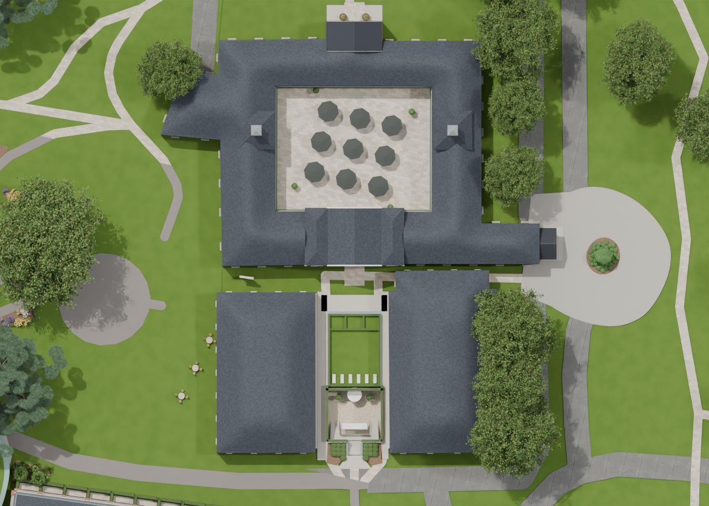
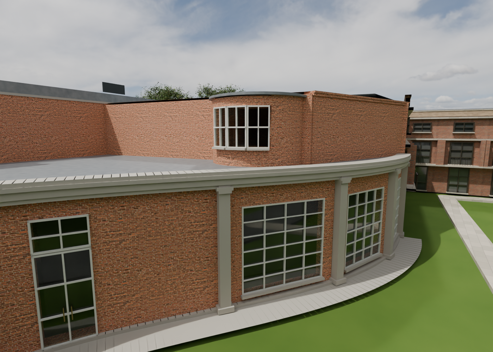
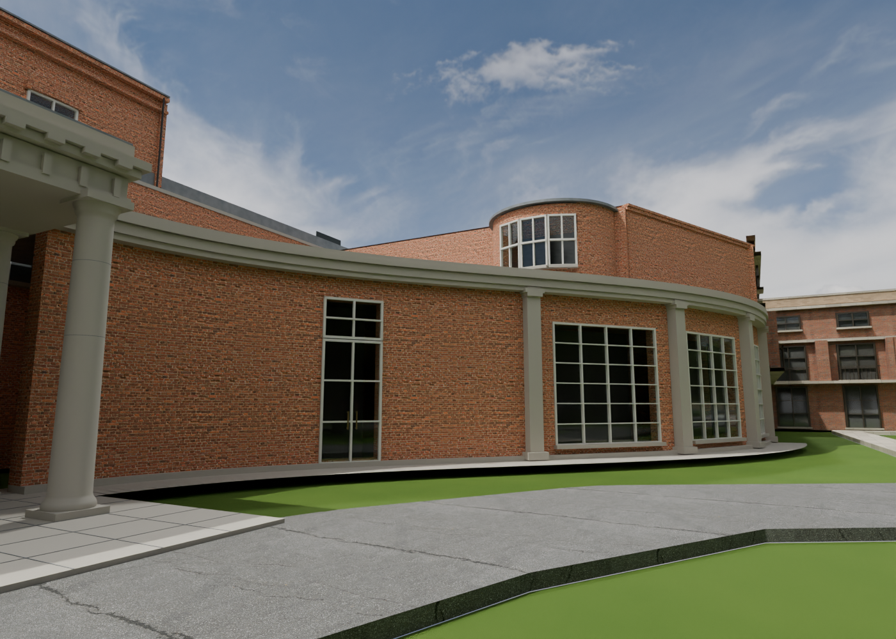
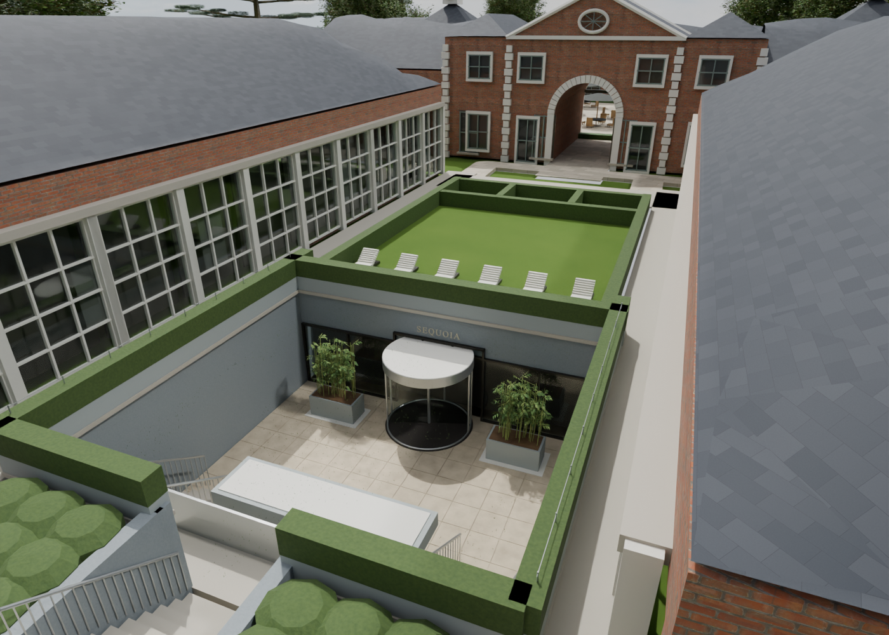
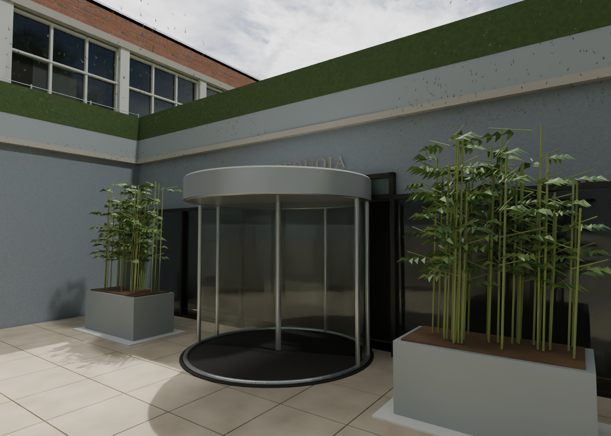

V28 restores the Stables restaurant courtyard and places Sequoia between the two spa wings, matching your circled aerial. Reception now has smaller windows with brick infill, a bow facing the Mansion, and closed wall junctions. The approved grounds and path repairs are retained. Dimensions and hidden details remain estimates.
Explore Sequoia · Reception return · Courtyard context





Earlier V26 reception and estate gallery — historical, before these corrections. V27’s Sequoia placement was incorrect and is superseded by V28.